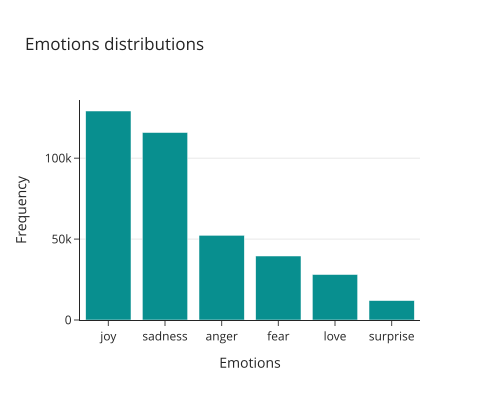
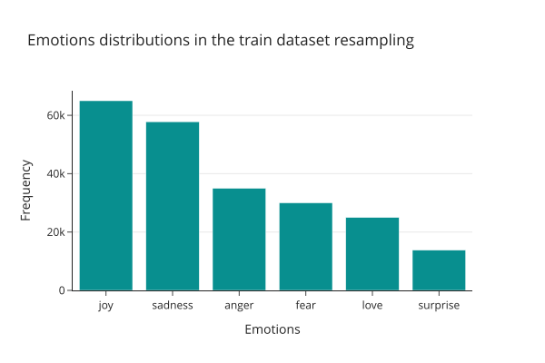
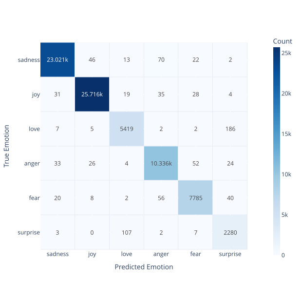
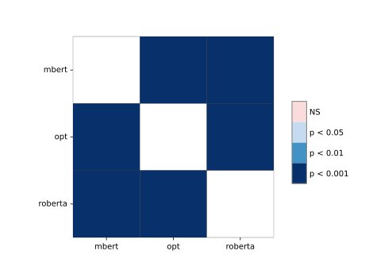

Practical ML design
The benchmark uses sequence classification rather than text generation, keeping the objective tightly aligned with the business task being solved.
This project compares ModernBERT, RoBERTa, and Facebook-OPT-350m on six-way emotion classification. The goal was to test whether 8-bit quantization, parameter freezing, and LoRA-based fine-tuning can deliver strong predictive performance without demanding large hardware budgets.
Key takeaways
Core stack
Many organizations need high-quality NLP models for customer analytics, sentiment monitoring, or conversational systems, but they cannot always justify heavyweight training costs. This benchmark tests how far efficiency techniques can go without giving up predictive quality.
The benchmark uses sequence classification rather than text generation, keeping the objective tightly aligned with the business task being solved.
The workflow applies 8-bit quantization, freezes backbone parameters, and trains LoRA adapters to reduce memory requirements while preserving strong quality.
The project goes beyond headline accuracy by reporting Macro F1, MCC, class-level behaviour, confidence intervals, and statistical significance tests across model predictions. Metric uncertainty was estimated using bootstrap resampling of held-out prediction-label pairs.
The benchmark combines data preparation, class-balancing interventions, efficient fine-tuning, and evaluation in one reusable pipeline.
ModernBERT achieved the strongest predictive performance, RoBERTa delivered the lightest training profile, and OPT-350m provided the fastest evaluation throughput.
| Model | Accuracy | Macro F1 | MCC | Train Time | VRAM | Eval Throughput |
|---|---|---|---|---|---|---|
| ModernBERT-base | 98.87% | 97.57% | 98.49% | 2:50:08 | 429.48 MiB | 13.02 it/s |
| Facebook-OPT-350m | 98.11% | 96.63% | 97.49% | 2:35:48 | 581.01 MiB | 28.26 it/s |
| RoBERTa-base | 97.62% | 96.22% | 96.83% | 1:21:33 | 329.66 MiB | 24.53 it/s |
This benchmark shows that no single model dominates every dimension. ModernBERT leads on predictive quality, RoBERTa is strongest on training-time and memory efficiency, and OPT-350m is fastest at evaluation throughput. Confidence intervals were estimated using bootstrap resampling of held-out prediction-label pairs, with metrics recomputed within each bootstrap iteration.
The benchmark addressed class imbalance before fine-tuning, improving minority-class representation in the training data.

Before intervention: strong class imbalance across emotion categories.

After intervention: improved minority-class representation in the training split.
Resampling and weighted cross-entropy intervention improved training coverage for underrepresented emotions.
The strongest-performing model also showed consistent class-level behaviour on held-out evaluation data.

Confusion matrix for ModernBERT on held-out evaluation data. Strong diagonal values indicate consistent class-level performance.
The benchmark combined uncertainty estimation and significance testing to assess whether model differences were statistically meaningful, rather than only numerically higher on headline metrics.

Pairwise McNemar post-hoc comparisons showing which model differences were statistically significant on paired predictions.
For a non-technical audience, this means the strongest model was not selected only because of a small score difference. The statistical testing adds evidence that at least part of the observed advantage reflects a real performance gap rather than random variation.
The technical result is strong, but the broader lesson is about practical machine learning design under constraints.
Quantized, frozen backbones with LoRA adapters can preserve strong classification quality while keeping fine-tuning practical on a single GPU.
Beyond architecture choice, reliable performance still depends heavily on dataset quality, class balance, and thoughtful in-process interventions.
The project is structured as a reusable benchmark rather than a one-off notebook, making it easier to extend to new classification datasets and future experiments.